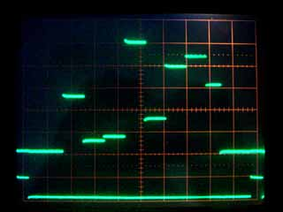

|
|
A-D & D-A port example. by Lee Davison |
|
 Introduction.
In this example the SuprDupr is used as an analog multiplexer to display eight analog inputs as a 'bargraph' type display on a 'scope.The SuprDupr also generates a trigger pulse to synchronise the 'scope on the second analog output.
The upper trace is the multiplex out, the lower trace is the trigger pulse.
| Last page update: 9th July, 2003. | e-mail me
 |